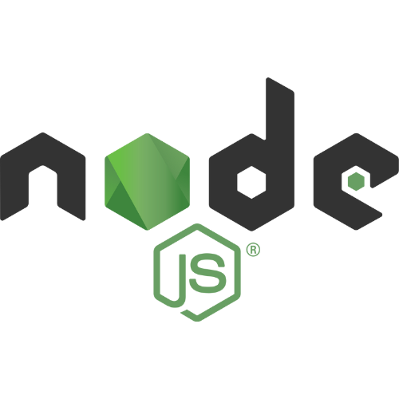

Sobre mí
Apasionado de la literatura, el deporte y la tecnología, con principal enfoque en la empatía, compromiso y el trabajo en equipo como pilares para lograr los objetivos en cada proyecto. Gran apertura para aprender y formarme en cosas nuevas que requieran un desafío que complementen día a día los conocimientos y experiencias ya adquiridas.
#264653
#2A9D8F
#E9C46A
#F4A261
#E76F51
~Skills

Cisco

Fortinet

Grafana

HTML

CSS

Javascript

PHP

Laravel

React

Git
Express

Jquery

NodeJS

Bootstrap

Tailwind
Laragon

MariaDB
Apache
PHPUnit
Formación de desarrollo profesional
Programación web Full Stack
DePC
Tecnicatura en programación web
Universidad Tecnológica Nacional
Mis proyectos
Experiencia laboral
Analísta de redes
Yel informática